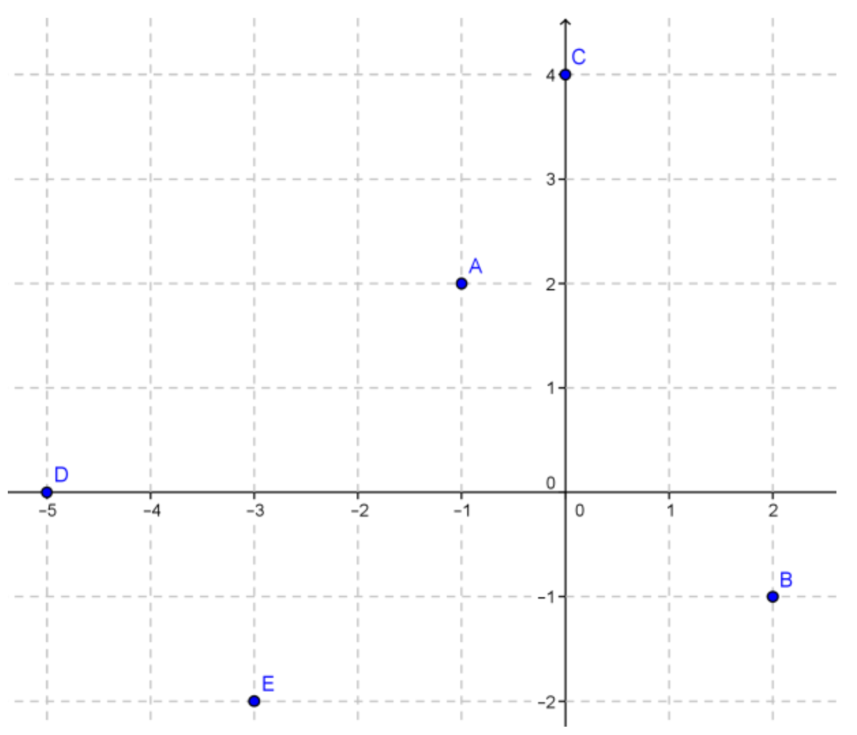
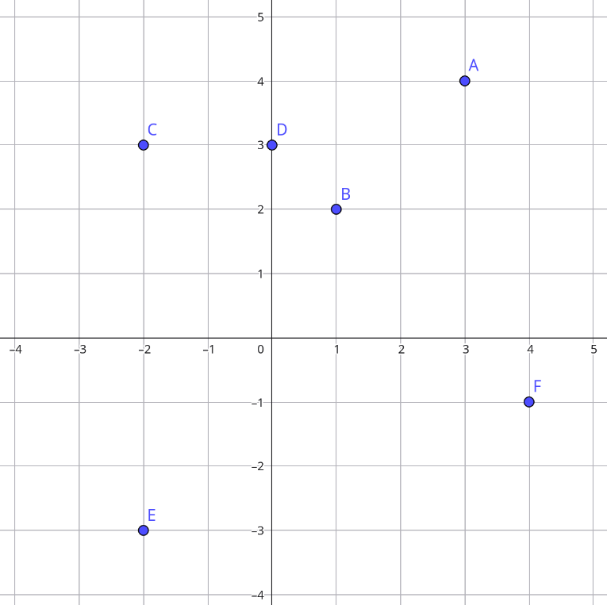
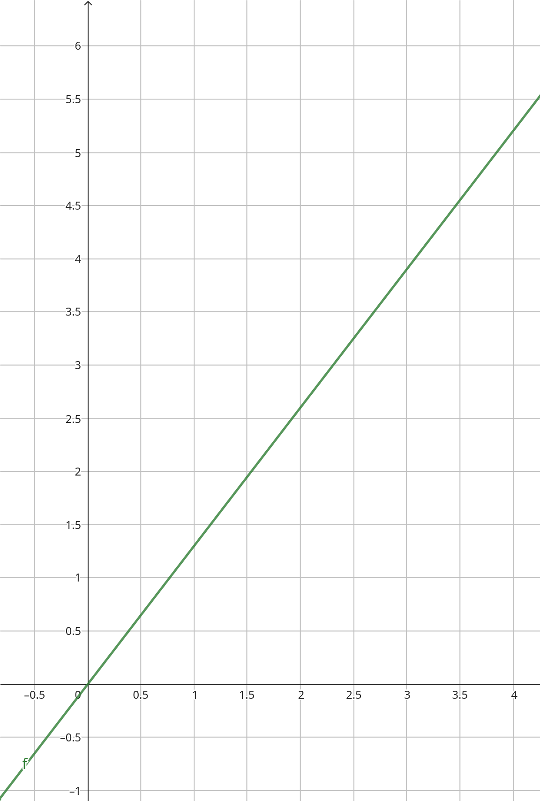

Funciones y gráficas
Coordenadas cartesianas
Las coordenadas de un punto \[A\] son un par ordenado de números reales \[(x, y)\], siendo “x” la primera coordenada o abscisa (nos indica la distancia a la que dicho punto se encuentra del eje vertical) e “y” la segunda coordenada u ordenada (nos indica la distancia a la que dicho punto se encuentra del eje horizontal)
Coordenadas cartesianas

1Representa graficamente los siguientes pares de valores:
- \[A(3,5)\]
- \[B(-2,4)\]
- \[C(-5,2)\]
- \[D(3,-4)\]
- \[E(-2,5)\]
- \[F(4,0)\]
- \[G(0,3)\]
2Indica las coordenadas de todos los puntos señalados en el plano:

Concepto de función
Una función es un objeto matemático que se utiliza para expresar la dependencia entre dos magnitudes de forma que a cada valor de una de ellas se le asigna uno y solo uno de la otra.
- Variable independiente: \[x\]
- Variable dependiente: \[y = f(x)\]

Formas de definir una función
- Enunciado o regla
- Tabla de valores
- Gráfica
- Expresión algebraica
Enunciado o regla
La función que relacióna los kg de azucar con su precio se podría representar por:
"Cada 1kg de azucar cuesta 1,3€"
Tabla de valores
En el tema de proporcionalidad estuvimos haciendo de este tipo de tablas
| Peso (Kg) |
1 |
2 |
3 |
| Precio (€) |
1,3 | 2,6 |
3,9 |
Gráfica

Representamos los pares de valores (x, f(x)) para cada valor posible de x.
3Indica cual de las siguientes gráficas no corresponde con una función:


Expresión algebraica
Ejemplo: la función anterior la podemos representar por la expresión \[f(x) = 1,3 \cdot x\].
Expresión algebraica: notación
Usamos la notación \[f(3)\] para denotar el valor de la función cuando la variable independiente (la \[x\] generalmente) vale 3.
4Indica el valor de f(3) para cada caso:
- \[ f(x) = 3x + 2 \]
- \[ f(x) = x^2 \]
- \[ f(x) = \sqrt{x + 1} \]
Funciones elementales
Polinómicas: Función constante
\[f(x) = c\]
Polinómicas: Función lineal
\[ f(x) = mx + n \]
Polinómicas: Función lineal
- Es una recta
- \[m\]: Pendiente.
- \[n\]: Ordenada en el origen
Polinómicas: Función lineal
Para representar calculamos dos puntos dando un valores a la variable independiente y calculando su correspondiente en la variable dependiente.
5Representa las siguientes funciones constante y lineal:
- \[f(x) = 3x\]
- \[f(x) = -2x + 3\]
- \[f(x) = 2\]
- \[f(x) = x - 4\]
Polinómicas: Función cuadrática
\[ f(x) = ax^2 + bx + c \]
Polinómicas: Función cuadrática
- Es una parábola
-
Signo de \[a\]:
- Positivo: Ramas hacia arriba (Convexa).
- Negativo: Ramas hacia abajo (Cóncava).
- Vértice en \[x=\frac{-b}{a}\].
- Simétrica par con respecto a una recta vertical partiendo de vértice.
Polinómicas: Función cuadrática
Para representar calculamos vértice, puntos de corte y puntos de la función teniendo en cuenta la simetría.
6Representa las siguientes funciones polinómicas calculando previamente vértice y puntos de corte:
- \[f(x) = x^2 - 3x\]
- \[f(x) = -2x^2 +10x + 12\]
- \[f(x) = x^2 - 8x + 14\]
- \[f(x) = -3x^2 +12x + 15\]
Características de las funciones
Dominio de definición
Llamaremos dominio de una función \[f\] al conjunto de valores para los que esa función queda perfectamente definida.
\[Dom~f\]
Imagen
Se llama imagen o recorrido de una función a todos los valores de la variable dependiente que tienen algún valor de la variable independiente que se transforma en él por la función.
\[Im~f\]
Puntos de corte con los ejes
Los puntos de corte con los ejes de una función \[f\] son los puntos de intersección de la gráfica de la función con cada uno de los ejes de coordenadas.
Continuidad
Tipos de discontinuidades
- Evitable
- De salto finito
- De salto infinito
Crecimiento / Decrecimiento
Máximos / Mínimos
Periodicidad
Una función es periódica si su gráfica se va repitiendo cada cierto intervalo.
Simetrías
Una función simétrica es una función en la que se puede encontrar un eje de simetría en su representación gráfica.
- Simetría par
- Simetría impar
7Describe las características de las funciones en función de los parámetros vistos en clase: